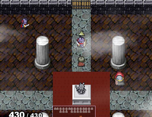

シルバーセカンド開発日誌
■
2014-06-14 (土) 片道+ 40 決戦シナリオ▼
クラス解放シナリオが一段落し、次はいつでも開発を
終わらせられるように「決戦シナリオ」の作成を始めることにしました。
というのも「アレとアレを作らないと終わりにできない」状態よりは
「もう最低限必要なのは作り終わったから後は面白さを足すだけだ！」
という状態のほうがモチベーションが高くなるからです。

今のところ大きな作業はその「決戦シナリオ」と、
「仲間を何人かくらい増やしたい」なと思っているくらいです。
残りは膨大な小さい調整とデータ追加で、
途中で何か思いついたら随時追加していく予定です。
とはいえ、その「残り」に一番時間がかかっちゃうんですけれどね。
しかし、もともとクリアへの道が数種類しかないゲームとはいえ、
追加パッケージとして考えてみると、もうちょっとくらい
目玉が欲しいかなと思うところもあるので、
その辺りで何とか目玉を用意できないかなと徐々に検討中です。
シレン5を遊んでみたときは、クリアまではイベントがあって面白いんですが
クリア後のダンジョンにストーリー要素が少なくて
自分にとってモチベーションを感じにくい部分もどこかありました。
そこはまあ好みの問題といえばそうなんですが、せっかくなので何とか
決戦シナリオまでへの導線を繋げられるよううまいことパーツを組み上げたり、
必要なデータを見定めて追加していきたいなと思った次第です。
データはそろってきたので、次は簡単でもいいから、
何か「進んでるな」と実感できる仕組みを考える必要がありそうです。
以下は前回の気胸についていただいたコメントです。
＞「私も気胸で入院したことがあります。一度目は補助具を付けて
＞ 自然治癒しましたが、10年くらい後にまたなりまして、その時は
＞ 手術しなければなりませんでした。大変ですが、頑張って下さい」
＞「私も気胸経験者なのですが、2回目の発病で手術までいったので、
＞ マジで気をつけてください。1週間くらい動けなくなるので。」 .
＞「気胸は再発が多いのでいずれ慣れますよ」
こここここわい情報ありがとうございます！
おかげで異常を感じたらすぐ病院に飛び込む心の準備ができました。■
2014-05-31 (土) 片道+ 39 シナリオ▼
久々にナンバーが付く正規の進捗報告です。
5月中に終わらせたいと言っていたクラス解放シナリオは
マリオカートの影響で2日くらい遅れそうですが段々とまとまってきました。
忍者シナリオ 襲ってくる敵の忍者を倒すシナリオです
基本的に片道勇者はランダム生成のマップなので、
その上で展開されるストーリーはものすごくご都合主義的です。
今のところ、
「進むと刺客がやってくる！ 進むと探している建物が見つかる！」
という感じで、とにかく何も考えずに旅を進めて、
クエストごとにときどき現れる危険な課題を
クリアしていってねという内容になっています。
どのシナリオも、（あれば）建物に入る→戦闘する、の流れがメインです。
実際に動かしてみて単調だと思ったら、ブラッシュアップ段階で
バリエーションを色々と変えてみようかなと思っています。
課題の内容にもランダム性を設けようかなと思いましたが
考えるコストが足りなかったので今のところ課題は固定です。
「絶対に勝てないモンスターがときどき出現して逃げ切ればOK」とか
そういうのも面白そうなんですけれどね。
しかし書いてみるとなんだか面白そうな気もするので、
高難易度に限って出してみるのも面白いかもしれません。
倒せないんだけど、闇に追い込むと報酬がもらえる感じで。
しかしいつもながら、シナリオ作りは難しいです。
ストーリーやギミック的な話をすると、原作で「あっ」と言わせるネタは
裏ボスとか世界観の話などでだいたい使い切ってしまったので、
ここからまた何か「あっ」と言わせるのは難しそうです。
こればかりは、開発中に思いつくか思いつかないかが全くの偶然で、
ひねり出してもなかなか出てこないものなので、片道勇者+では
そういった面での満足度はあまり確保できないかもしれません。
ひとまずある程度の新鮮さを確保できているように感じられるくらいは
努力で何とかしてみせたいところです。
以下は拍手返信です、いつもありがとうございます！
＞ライターやってる人間ですが、仕事じゃなくて趣味の感覚でやってます。 .
＞凄い小説家になると１ヶ月で２０万字とか書きますからね（私の仕事だと .
＞５万字くらいだから相当楽）。それだけの文章、好きじゃなきゃやれませんよ。
＞テキスト、ですか。キャラクターの台詞など、でしょうか？ .
それも含めて、私がテキストと言う場合はイベントスクリプト全般ですね。
「どういう経緯でその場面までたどり着くか」、
「どういった分岐が必要か」というパターンを想像してテキストを書くのが
ゲーム開発独特の悩みなのか、いつもすごく大変に感じます。
書くこと自体より、その場面が「どういう文脈・前提を持ちうるか」を
イメージする方が疲れるのかもしれません。
もちろんそれだけでなく、文章にちょっとした意外性や
個性を持たせつつ自然に書くのも大変に感じます。
物書きの達人はこの辺を楽々こなせるくらいに
成熟できてるのだと思うと、頭が下がるばかりです。
＞ガイコツが現れたら「マイネームイズ透ける豚」とか言い出したり
＞「ウマコォォ！！」って言いながらウマコを一定のペースで .
＞床に落とす敵が現れたりするカオスモード導入とか無いですか？
なにそれ面白そうですよ！？ と思うものの、そういう系は
一斉にネタで飽和攻撃しないと面白さがマックスになりにくいと私は思ってるので、
面白くできそうな形で搭載するのはローグライクだと難しそうです（全部は多い！）。
今作はこの場でのご紹介まででご勘弁ください！面白いネタありがとうございます！
でもウマコをポロポロ落とす敵自体は普通に入れてもネタになるかもしれませんね。
ウマコを投げると敵にバッドステータスを与えられるぞ！みたいな。
＞片道勇者TRPGも友人と一緒にセッションして倒れかけたりしています(笑)
＞そこで、TRPGルールについて質問なのですが戦闘スキルにある「二刀流」
＞このスキルは一刀目が完全に防御された場合は二刀目はどうなりますか？
＞完全に防御された場合二刀目も完全に防御されたと見なして良いのでしょうか。
遊んでくださってありがとうございます！ 【二刀流】は、
「仮に一刀目がノーダメージでも、二刀目は二刀目でまた防御判定を行う」
という形を想定しています。ただ一刀目が防がれる相手だと、
まず二刀目なんて通らない気がしますから、運用上
面倒くさければおっしゃる手順でもあまり問題ないと思います。
とはいえ二刀攻撃はHPを1消費するので、PCが二刀攻撃するときは
いちおう両方とも防御ロールを振ってあげたい気はしますね。
＞シル学のクリアデータページの文字化けを修正したとのことですが、
＞また日本語だけ文字化けしているようです .
これは失礼しました！ うまくいったのはテストデータだけだったようです。
また時間を見つけて調査してみます、ご報告ありがとうございました！■
2014-04-19 (土) 片道+ 38 病と展開と▼
激しい嘔吐と下痢の症状が出て死ぬかと思った状態が
今週の半分くらいを占めていた私です。
全部出してゆっくり寝てたらケロッと治ったので
さほど大きな問題ではありませんでした。
今週の残りの半分は、今後の片道勇者の
新（？）展開の対応や準備に追われていました。
『片道勇者』は、よくもわるくも私の手の届く範囲から
離れて展開していくことになるかもしれません。
というか今現在もSteamで販売とか、すでに
私一人じゃ届かないところにいってしまってますけれどね！
手を貸してくださっている皆さまには感謝の限りです。
◆今回実装を試みていたもの
さて、今回は開発以外でドタバタしていたので、
片道勇者＋は小さい項目だけちょこちょこ進めていました。
【プレイヤーキャラの外部画像の使用】
片道勇者＋では「プレイヤーのキャラクターチップや顔画像を差し替え」
することができるようになる予定です。
特定のフォルダに「Class01_B_Chip.png」や「Class01_B_Face.png」
といった画像を入れると、プレイ時にその画像に置き換わります。
※剣士Bの顔とチップの画像をネムリにしてみた例
なお、ネット機能によるプレイヤー一覧は元の画像で表示されます。
これで配信プレイのときもなりきりプレイができて安心！（？）
キャラチップの作成にはグラフィック合成器をぜひどうぞ。
【好みのBGM設定】
また、「好みのBGMを地形ごとに追加」することができるようになります。
たとえば砂漠地形に新BGMを4曲入れて、オプションで「外部BGMの再生率」を
「20％」にしておけば、5回に1回の確率でその4曲からランダム抽選されます。
他にも、特徴として「どこでも外部曲再生」スキルを実装予定です。
最大で9曲のOGGファイルを登録できて、
地形の曲を好きな曲に変化させることができます。
これは既存曲に飽きてどうしようもなくなった人向けの機能です！
というのも、そこまでイメージに合いそうな曲がもう残ってないものでして
「自分で入れてくれー！」と白ハタを揚げてる状態なんですね。
以下は拍手コメントです。
前回の片道勇者のバランスについてのコメントや案など、
たくさんありがとうございます！
全部読ませていただいた上で、面白そうなのは検討事項に
入れさせていただきましたので、もし他にもあれば遠慮なくどうぞ！
ゲームは部分的に要望を聞くとグニャグニャになったりすることも多いので、
うまく咀嚼（そしゃく）して、うまく仕上がるようにがんばります。
（前の記事の 日本ゲーム大賞 の応募要項について）
＞シェアウェアの報酬に関しては、プロと見なされるかどうかは
＞微妙なところじゃないでしょうか。問い合わせてみては？ .
実はシェパード捜査録やクリフ深淵録など、企業様から
お仕事として請けた仕事がモバイル方面でいくつかあるんですよ。
さすがに「まだ2回しか請けてないから大丈夫だよね？」
って問い合わせる勇気はありません。
＞おおよその開発のロードマップが気になります
＞あと、いつ頃発売予定なのかも気になります
ごめんなさい、予定は分からない、というのが正直なところです！
面白いアイデアが出るとその分だけどんどん遅れていきますし、
一ヶ月くらい半分のペースしか出せないときもありますしね。
それでも、今で8割くらいは終わった感触はあります。
残りの作業は前回挙げた通りですが、片道勇者に関しては
開発以外にも色んな脇の話が入ってくるのもあるので、
不確定要素が多くて計算ができないのもあります。
一般的なゲームも発売数ヶ月くらい前にならないと
予定が立たないのと同じく、こちらもおおまかな終わりが見えた頃に
発売予定などをご報告できると思います。■
2014-04-12 (土) 片道+ 37 実装まとめ▼【片道勇者+ その37】 実装まとめ

自動ターゲット機能を実装！
これのおかげでShiftがほぼいらなくなりました。
ということで、なんだか久々に片道勇者＋のお話です。
たまたま経過版を人に渡す機会があったので、現状のプラス版が
通常版からどれだけ修正されたか整理してみました。
●データの追加
- 新しいクラスの追加 → 忍者・理騎士・観光客の3つ
- 新しいNPC・敵・アイテム・スキル・付与の追加
ここで紹介するとそれだけでスペースが溢れるほど増えましたのでお楽しみに。
- 新しい施設・マップパーツの追加
- 新しい地形の追加 → 要塞・海岸・洞窟、など
- 初期創世時のメッセージを追加
●総合的なバランス調整
- [クラス] クラスの基礎能力、スキル、成長率を一部調整しました。
たとえば、剣士の連続攻撃率の補正が「2倍」から「+30％」になりました。
- [能力値] 全ての能力値の効果を調整しました。
- [スキル] スキルの性能を一部調整しました。
たとえば、集中スキルの重複限界を5回までに設定しました。
また、雷光の有効範囲が周囲5x5マスから前方3x3マスになりました。
- [特徴] 特徴のパラメータを一部調整しました。
- [アイテム] 装備・アイテムのパラメータや効果を一部調整しました。
食品アイテムの多くは腐るように。肉は焼けるようになります。
- [付与系の巻物] 剣の巻物など「ランダムで効果が付与されるアイテム」は、
出現した時点で付与される効果が固定されるようになりました。
アイテム名は「剣の巻物『頑丈』」などに変わります。
- [敵]敵の能力値・経験値を調整。一部の敵はスキルを一定確率で使用します。
- [付与] 「伝説の～」などの一部の付与は、巻物では付けられなくなります。
かわりに、そういったレア付与の効果は大幅に上昇しました。
- [付与] 多くの付与に「消耗速度増加」が付きました。
- [素手] 素手の物体破壊効果を減少。素手では
壁やガイコツなどにダメージを与えにくくなります。
- [連続攻撃] 連続攻撃の3回目以降の発生確率を調整しました。
一定数値を超えると連続攻撃が出過ぎていたので、その修正です。
- [連続攻撃] 武器ごとに連続攻撃率に補正がかかるようになりました。
剣なら1.3倍、槍や素手は1倍、斧は0.6倍です（※現在も数値調整中）。
- [地形移動] 水泳スキルと登山スキルの侵入ターンへの影響を調整しました。
なお、山へ侵入するときの最低移動ターンは1から2になります。
- [矢] 矢を直接「投げる」できなくなりました。
しかし装備として身につけることで、攻撃時に2マス投げられます。
※近接武器が届く場合は武器で攻撃します。
- [経験値] 経験値取得の計算式を修正しました。後半の経験値がよりマイルドに。
- [NPCの所持金] NPCに最大所持金が設定されました。
商人は5000シルバ以上のお金を持っていますが、
セーブ屋や料理屋は2000シルバしか持っていません。
- [地形] 世界によって、出現する地形にかたよりが出るようになりました。
ただし特定の地形がまったく出なくなるようなことはありません。
- [イベント] 女神像による強化内容は、ランダムの最大4択になります。
その中から最も重要なものを選択していく判断が要求されます。
●新システム
- 城の改装システム
プチレアアイテム「次元の金貨」を5枚以上集めると解放されます。
次元の金貨を消費して増築し、住人を配置することで
ゲーム開始時に様々な特典を得ることができます。
- 追尾仲間システム
従来の「主人公と同じマスで戦う仲間」とは違い、
「別のマスにいて追尾してくる傭兵NPC」が新たに実装。
うまくやれば敵の側面を突いて戦うことが容易になります。
- 食品の腐敗システムの実装
数日に一回、ランダムで食品が腐って別のアイテムに変化します。
食品が腐るのを防止する防具の「付与」も存在します。
- 国システムの実装
遠くまで旅をすると「最初の民族の国」以外に、
「異民族の国」や「獣人の国」を通過することがあります。
そこでは変わった住人に出会えるでしょう。
- 中ボスの実装
一定距離進むごとに、「中ボス」級に強化された敵がお供と一緒に出現します。
高い難易度では頻繁に襲い来るでしょう。勝てば得られるものも多いものの、
砂漠で鳥人の中ボスが（偶然にも）魔王と一緒に現れたりすると楽しいことに。
- トラップの実装
足元に設置でき、誰かが踏むと起爆する「トラップ」が新たに実装されました。
今のところ忍者専用ですが、アイテムとして増やしたいと思っています。
- ゲーム終了時、死亡時のスクリーンショットを見られるようになりました
- 「高い山」を導入しました。高い山はマップの上下の端に広がっており、
従来の山よりも移動に時間がかかります。
- 宝箱に対する新たな処理を導入しました
1.宝箱を一度でも攻撃すると、箱の上に「宝箱の中身」の種類が表示されます。
たとえば、癒しの草が入っていれば箱の上に草のマークが表示されます。
2.宝箱を攻撃で破壊すると、まれに中身が一つ破壊されるようになりました。
「開錠」スキルや「宝箱のカギ」で開ければ安全に開けられ、経験値も入手できます。
- 詩人や冒険家など、弱いクラスはクラスに応じた施設に入るだけで
経験値が入手できるようになります。
詩人は街へ、冒険家は迷宮へ足を踏み入れると経験値を入手します。
- どのクラスでも、新たな地形へ到達するたびに100％の
経験値を得られるようになります。
- 「吹き飛ばし」を実装しました。
キャラクターが特定のアイテムやスキルによって吹き飛ばされるようになります。
うまくやれば、敵を溶岩に落として倒すことも可能です。
- 闇の影響で、ごくまれに正体が分からないNPC・敵が出現します。
その場合、正体が分からない相手は「黒い影」で表され、
名前は「？？？」になります。性能や会話内容自体はいつものままです。
先制攻撃するか、正体を見極めるか、判断を要します。
旅をした距離が長くなればなるほど、出現しやすくなります。
- 主人公を探知すると壁を壊してでも向かってこようとする敵がごくまれに出現します。
旅をした距離が長くなればなるほど、出現しやすくなります。
●インターフェース調整
- 敵探知機能の実装
画面の右へ移動中に敵を探知すると、
主人公の上に「！」と表示されて移動を停止させる安全機能を実装しました。
操作を停止させたくない場合はオプションから設定できます。
- ショートカット機能の実装
1～8キーにショートカットを登録できます。ショートカットに設定するには、
メニューからスキルやアイテムを選んで1～8キーを押します。
使用時は、マップ上で使いたい1～8のキーを1秒ほど
「押しっぱなし」にすることで使用できます。
- 加速機能の実装
加速キーを押すと移動速度が3倍になります。メッセージもスキップ可能。
- 自動ターゲット機能の実装
「移動ごと」または「毎ターン」、近くにいるNPCの方角に自動で方向転換します。
また、サブキーを押すたびに対象を自動切り替えできます。
- 敵が強化された場合、+1など強さのプラス値が明示されるようになりました。
敵の強化条件は「高い難易度にする」「距離を進める」「敵が別NPCを倒す」など。
- ダメージを受けてLIFEが一定％以下に減少すると効果音を鳴らす仕様を追加
- セーブデータ一覧において、終了時に次元倉庫が使えるデータと
使えなくなったデータが分かるよう修正
- 開始時のキャラクター作成画面で連続攻撃率・必殺率・識別率も表示するよう修正
- アイテムが炎上したときに効果音を鳴らし、ウェイトを持たせるよう修正
（これまで何が起きているか把握しづらかったため）
- 画面左にいくと同じ世界のプレイヤー一覧を薄くする処理を追加
- キャンペーンの残り時間が表示されるようになりました。
同時に、キャンペーンごとのクリア済み状況もマークで表示されます。
- 背面ダメージ補正が表示されるようになりました（x1.6 など）
- 日付が変わるたびに「2日目になった。」などと表示されるようになりました。
- 範囲スキルの使用時、効果範囲が一瞬青く表示されるようになりました。
- ミニマップのマークの色が識別しづらかったので、色を分かりやすく調整
●オプション強化
- ゲージの配置変更機能の実装。いくつかのパターンから選択できます。
- ショートカットの配置変更機能の実装。いくつかのパターンから選択可能。
- 自動取得設定の実装。「自動的に拾うアイテム」をいくつかのパターンから選択可能。
- 自動ターゲット機能の実装。頻度を「なし・移動ごと・毎ターン」から選択可能。
その頻度に応じて、隣接する敵やNPCを自動的にターゲットします。
また「なし」以外にしておくと、「サブキーを押すたび」に
「異なる対象」にターゲット切り替えできます。
- ゲーム終了時のイーリスのアドバイスをオン・オフできるようになりました。
これによってただでさえ熟練者に影が薄いイーリスの気配が完全になくなります。
- 「エクストラ」に『クラス別データ』が追加されます。
クラス別のプレイ状況や、クラス・難易度別の最高レベル・到達距離を閲覧可能。
- 「エクストラ」に『スペシャル要素』が追加されます。
従来の「クリア時のおまけ画像」を見たり、「スタッフロール」の閲覧が可能です。
【セーブデータについて】
- 片道勇者のオリジナル版からのセーブデータのコンバートが可能です。
プラス版の初回起動時に詳しい説明が表示されます。
【今後の予定】
- クラス解放シナリオを作成。
忍者・理騎士・観光客は専用のシナリオをクリアすることで解放される予定です。
- 新たな敵との最終決戦シナリオを作成
- 観光客の専用ゴールを作成
- 新システムをブラッシュアップする作業
- 新たな仲間とそのエンディングを作成
- アイテム・敵・NPC・スキルデータ追加。ここはまだ非常にたくさんあります。
- その他書き忘れてること全部 （※たぶんここが一番多い）
|
という感じです。ご意見を頂いた点や、私自身も面倒だと思ったところは
より遊びやすく、そして最適の選択肢が自明になってしまっていた部分は、
もっと判断力を要求される形にブラッシュアップしています。
どうもローグライク系は（意味のある）データ量の多さが
「飽きるまでの時間」に直結するみたいなので、
今も思いついたアイデアを惜しみなく投入している最中です。
少しは片道勇者の世界に広がりを感じられるようになっていると
いいんですけれどね。
以下はいただいた拍手への返信です。いつも本当にありがとうございます！
＞今年の日本ゲーム大賞はアマチュア部門も募集するようですが、
＞Wolfさんは参加に興味あったりするのでしょうか？ .
おおー！？ と思ってアマチュア部門の応募要項を見てみたら、
※会社所属、契約、フリーランスなどの勤務・雇用形態に関わらず、
ゲーム制作の対価報酬を得られている方につきましては、
プロのゲームクリエイターとみなします。
と書かれているので、この基準だと私はプロ扱いになって
私はそもそも参加できないようです。
つまり日本ゲーム大賞基準なら、私も堂々とプロを名乗れます！！！！
……プロか否かで能力が変わるわけじゃないんですけどね、ええ。
＞片道勇者TRPGのルールに鳴子トラップが二重に書かれています。
修正しておきました、ご指摘ありがとうございます！
（忍者就職活動記リプレイに対して）
＞読み終わって、「ふー面白かったーでもこれは次回ないだろ」と思ってたら続
＞くんですか！？ 「つづく！」の部分だけエイプリルフールの嘘だったりはし
＞ませんか…？ 本当に続くなら、このサイトのTRPGリプレイ好きなので嬉
＞しいです。内輪向けの備忘録のような、本来の（？）楽しみ方をするリプレイが
＞多い中、読み手を意識した丁寧な編集と個性あるキャラ付けでスムーズに読
＞み進められます。料理大会と聞くと嫌な予感しかしませんが、そんなところも
＞楽しみにしてます！！ .
読んでくださって ＆ 評価してくださってありがとうございます！
忍者編のリプレイ編集は、ＧＭであるンクの中の人さんによるもので、
かなりしっかり編集してくださっているので読みやすくなっていると思います。
次の料理大会編は本当にありますのでお楽しみに！ こちらが本番です。 ■
2014-03-29 (土) 片道+ 36 残り作業▼【片道勇者+ その36】

冒険家B、よく見ると生足なんです。
さて、そろそろ片道勇者+途中版に対する
約100個のフィードバック対応の終わりが見えてきました。
あと25個くらいでしょうか。ほとんどはバグや微調整の類です。
これが終わった後、完成に向けて行う必要がある作業をまとめてみました。
◆サブシナリオの追加 …… 新クラス解放の条件となるシナリオ。
◆真、最終決戦の追加 …… やはり1つはないと！
◆システムの追加 …… 国システムの調整やら色々。
◆おまけ機能の搭載 …… キャラチップ・顔画像入れ替えなど。
◆NPCやアイテムの追加 …… 時間経過でどんどんネタが増えてます。
◆やり込み用特徴の追加 …… 単に特徴の搭載、ですが迷ってます。
◆書き忘れてること色々 …… 常に何か抜けてますし後から増えます。
まだまだゴールは遠いですが、途中にテストプレイを挟んで
調整しながら、ボチボチと進めていきたいと思います。
で、この中の「やり込み用特徴の追加」については、
実装をかなり迷っています。というのも、考えれば考えるほど
自分の力では全体を崩しかねないヤバい予感がプンプンしているからです。
【「やり込み特徴」をなくして別の形にする？】
「やり込み用特徴」とは、ゲーム開始時にそれを選ぶことで
プレイが不利になる代わりに、最終スコアが上昇したりする「特徴」です。
要望があって、簡単に入れられそうなので何も考えずに入れてしまいそうに
なってるんですが、このやり込み特徴に関しては
実装をちょっと迷っているところがあります。
この特徴は、入れれば入れるだけ難しくできます。しかしこれ、最終的には
「一番スコアを稼げてデメリットが少ない組合せ」に収束して
いくと思うんですよ。ハイスコア狙いの人は楽に狙いたいでしょうし、
だいたい「強化枠」をつぶして「縛り」にする仕組みがいまいちピンと来ません。
いっそ逆に、「使えるものを全部使った上で
困難な条件をこなしたらポイントが大幅に増える」とか
そうした仕組みにほうが素直な気がして、いま悩んでいるところです。
たとえば「ライフx0.7（でスコア+10%)」のやり込み特徴を5つ取る（ほぼ即死）のも、
クリア時に「ノーダメージでクリアした スコアx1.5」の項目を入れるのも
おそらく最終的な意味としてはほとんど同じです。
今の私は、そうやってやり込みを評価する方向に考えが移りつつあります。
（もちろん、無傷だったらユーザ一覧に目立つマークを付ける報酬も必要）
モヤモヤ感が残るまま要素を搭載するのは非常に恐いことです。
なるべくスッキリ遊べるよう、注意しながら実装していきたいので、
提案してくださった方には申し訳ないのですが、
最終版には「やり込み特徴」は残らないかもしれません。
もし残らなければ、今度はやり込みによるボーナスのヒントを
ゲーム中のどこかに載せられるようにしたいと思っています。
とにかく、もっと上を目指すための何かは入れていきたいですね。
＞SilverSecondのサイト名由来に関して調べないといけない
＞機会ができてしまいました！！調べても出てきません！！
＞ウルフさん回答できればお願いします！！ .
SilverSecondは「銀（賞）2番目」とか「銀の（価値がある）1秒」
という意味です。「銀（賞）2番目」なのは、
「誇りを持てる結果を目指したいと同時に、常に
もっと上を目指す気持ちを持ち続けたい」という願いです。
私は、賞やら何やらバリバリ取っててもなお全力でいられる人を
うらやましいと思っています。すぐ調子に乗っちゃうもので。
＞片道勇者でパンティ死亡時に手に入るパンティの剣の耐久が .
＞10減ってる状態で手に入るのはパンティが使用済みだからですか?
はい、パンティが使用済みだからです！
じゃなくてたぶん私のミスですが、デュークガルツはちゃんと剣を直して
渡してくれそうなので、別にその解釈でもいい気がしてきました。
＞片道勇者+が完成間近っぽいので、今のうちに要望出します！
＞SmokingWOLFさんのゲーム開発論や、RPGに対して思うこと、
＞製作手順などをまとめた本が欲しいです（略） .
＞（※例として「魔王物語物語のつくりかた」を挙げておられました）
「片道勇者のつくりかた」はいずれ書いてみたいなと思ってます。
たぶんデータ販売になると思いますけれど、それでもよければ。
何が面白そうって、同じゲームを一度プラス版として作り直す機会が
できたので、気兼ねなく自分のゲームをディスれるところですね！
こういうゲームにこれは合わなかったとか、これは絶対必要だったとか、
こういう意図をもってこれとこれを用意したとか、色々ネタはありそうです。
なお同じRPGでも、シルフェイド幻想譚の作り方は忘れました。
なぜあんなものができたのか、いまだに分かりません。
今あれをまねて作ると、焦点が定まらないダメゲーしかできない気がします。
同じ人が同じジャンルを作ってもまた評価されるとは限らなくて、
だからゲーム開発って恐いなと思っています。 ■
2014-03-22 (土) 片道+ 35 ﾌｨｰﾄﾞﾊﾞｯｸ▼【片道勇者+ その35】 フィードバック対応中
[特に関係ないキツネっ娘]

＜今やってることについて＞
片道勇者＋は現在、テストプレイやイベント会場で得られた
約100個近くのフィードバックに対応している最中です。
たとえば会場では方向固定キーに気付かずに苦労してる方が多く、
「なんで敵隣接時のオートターゲット機能を付けなかった！」
と後悔しているところです（※「Shift押さなくても」勝手に敵側を向く機能）。
たぶん、この機能を付ければ移動後のShift押しも必要なくなるので、
慣れた人にとってもある程度は快適になるんじゃないかなと思います。
実はこのオートターゲット希望のご意見はゲーム公開後にも頂いてて、
当時は優先度がそんなに高く見えなかったんですが、リアルで問題を見ると
「付ければよかった」後悔がふつふつと！ どうもすみません！
やっぱりちょっと新しめのゲームを出すときは、不特定多数の人による
画面共有状態でテストしてもらうのがとても重要ですね。
プレイを見ていた中では、上記の件が一番致命的だったなと思いました。
幼女が遊んでて、攻撃方向が合わずになすすべもなく
死んでいるのを見たときは土下座したくなりました。
＜説明の仕方について思ったこと＞
あと、これは今さらなのでもう変えないと思いますが、
プレイを見ていると、仮に「方向転換に関する説明」を出すにしても
イーリスのアドバイス「CやShiftを押し続けると方向転換だよ」は、
「ゲームの最初」だけでなく「敵に斜めから隣接されたとき」にも出す方が
より適切だったのではないかなと感じました。
この件はプレイ初心者向けの話なので、今や完全に手遅れなんですけどね。
これはメニューを出す説明もそうで、たとえばLIFEが減った場合にも
「回復しよう！メニューを出すには～」と説明した方がよかったと思います。
ちなみにこれらの「ここで説明を出すべきだ」と思った部分はすべて
私がイベント会場で「いま私が直接教えるべきだ」と感じた状況です。
目の前でテストプレイしてもらって、「ここで教えるべきだ」と
感じたタイミングに小さいヘルプを放り込んでいくだけでも、
手軽に良いチュートリアルが作れそうな気がしてきました。
何はともあれ「最も困りそうな瞬間に説明しないと覚えられない」は
個人的には基本中の基本だったはずなので、これからは
リリースする前に気づけるようになりたいです。
細かい違いとはいえ、これによってゲームを投げられてしまう
可能性も十分にありますからね。
＜総合的には＞
しかしこういった気になる部分はあったものの、ひとまずプレイ経験者の
方々によると、プラス版は総合的にはおおむね好印象なようでした。
が、これは奥の浅さに気付くとゲンナリするコースかもしれません。
ローグライク作りはリソース的にも判断的にもまだ難しいテーマですが
挑戦としてはすごく楽しいので、私のやれる限り
よりよく仕上げていきたいと思います。
【ストラップのお話】
ネムリストラップ（販売終了）を購入してくださった皆さま、
本当にありがとうございます！
今のところ、数週間かけてゆっくり売り切れそうなペースなので、
この初回生産分で販売を終える予定です。欲しい方はお早めに。
この記事を書いている段階では、在庫は57％となっております。
しかし通販は大変ですね。お客さんも住所を書かないといけませんし、
住所がまちがってたら届かないですし（実際2％くらい事故が出てる感）、
ある一定数を超えれば作業量の都合で委託しないと辛いしで。
特に個人情報周りの心配は、ネット上での情報管理力に優れた人ほど
データ販売に比べての購入ハードルが高くなる気がします。
情報流出は企業規模にかかわらず起こりえますからね。
そんな中でも買ってくださった皆さまに感謝すると同時に、
プリペイド式のデータ販売の良さも再確認しているところです。
以下は気になった拍手への返信です。
皆さまのコメント、いつも本当にありがとうございます！
＞＋版では冒険家のLIFEの成長率を修正するとのことですが .
＞オリジナル版は従来のままということになりますか？ .
＞成長に関してもう一つ、女神像ではカバーしきれない .
＞成長パターンを引いてしまった時のために .
＞成長パターンを変化させるNPCを配置することは出来ませんか？
はい、冒険家の成長率は、オリジナル版ではそのままです。
成長パターンに関してもオリジナル版はそのままですが、
＋版では一度終わった成長テーブルが書き換えられるようになるので、
高レベルの状況は、これまでよりも平坦化されると思います。
＞大激震で武器の耐久を消費しないのはバグですか？
同じ範囲攻撃の「雷光」は武器の耐久を消費するっぽいのでバグです。
しかし翻訳システムの都合上、直すのが非常に困難に
なってしまったため、これに関しては＋版で修正予定です。
＞ネムリンに貢いできました～！！ .
＞コンビニで入金手続きしてきました～！！ .
＞送料700円にブフォワッてなりましたけどそうですよね、 .
＞倉庫代と梱包材費用と決済手数料と純粋な送料と人件費と
＞（あちら（カートシステムの会社）の儲け分）って考えると（略）
お買い上げありがとうございます！ BOOTHさんちの
送料が高くて私もブフォッってなりますが、これはおっしゃる通り
この送料で倉庫費と人件費を稼ぐタイプのショップだからみたいです。
皆さまの負担が大きくて申し訳ありません。
せめてまとめ買いできる商品が置ければ良かったんですけれどね。
普通の同人ショップの委託は事前審査が必要なのと、
商品定価の約3割くらいを手数料として持っていかれるので、
今回は追加生産しない前提で、開始の手軽さと収入を重視することを
ふまえて、BOOTHさんを使わせていただきました。
出店側からは手数料をあまり取らないのが、今の私にとって助かってます。
逆に、同人ショップさんへの委託に比べるとBOOTHさんの方は
トラブルがあったときに少し面倒になる欠点もついてくるようです。
受け入れてくれる分だけを同人ショップさんに預けて、
預かってもらえなかった分をBOOTHさんで売るとか
そういう使い方もいいかもしれませんね。
次に物販する機会があったら色々考えてみたいと思います。
>自分も気になって調べてみましたが、 .
>(Steam実績の)jerbはおそらくアメリカで流行っている？
>「THEY TOOK OUR JERB!!」 .
>コラから来ているのではないかと。 .
ああ、これですこれ！ どのくらいの認知度か
分からなかったんですが、調べると確かによく
二次ネタにされてる感じです。調査ありがとうございます！
[このセリフのネタ まとめ（英語ページ）]
http://knowyourmeme.com/memes/they-took-our-jobs ■
2014-03-01 (土) Steam販売開始！▼【Steamで片道勇者が発売されました】
色んな人達や皆さまの手助けにより、本日午前3時、
Steamにて「片道勇者 / One Way Heroics」がリリースされました！
【Steam購入ページへのリンク】
何がよかったのか、Steamトップページの「おすすめPC用ゲーム」の
目立つ場所にまで載せてくださって、スタートはとても順調なようです。
バナーのクリック率がよかったので、それが効いたのかもしれません。
（Steamが目立つところに載せてくれる基準は、クリック率などの
データに基くよ、というようなことが説明書に書いてありました）
↓

なお、内容はフリー版とほぼ同じなので、
すでに散々プレイ済みの日本の皆さまにとっては
私への金銭的援助を目的として買ってくださる以外、
あまりこれといった価値はないと思います。
2014/3/1 18:31 追記
Steam版は【プラス版ではありません】のでご注意ください！
インターフェース調整やデータ追加を行った【プラス版】は
現在開発中であり、どこにもリリースしておりません。
いちおう、Steam版とフリー版の違うところを述べますと以下の通りです。
【1】Steamのオマケが付く
これはもっぱらSteamで遊んでおられる人しか得をしませんが、
「トレーディングカード」や「Steam内で使えるアイコン」がもらえます。
レアなトレカやアイコンを引くとSteamのマーケットで$10で売れたりして、
買った値段を取り戻せたりすることもあるという面白い仕様です。
【2】ちょっとだけ創世時のロードが早い
ちょっとがんばりました。
40％カットくらいになってると思います。
【3】英語版も遊べる！
ただし「日本語版とはセーブデータ・サーバは別」です！
英語版モードでは日本語が表示できないためですね。
【4】プラス版に向けてのプレイ統計がこっそり記憶される
プラス版ではクラス別の統計を表示できる機能が
追加されるのですが、Steam版からは内部的に
それに備えたデータ蓄積を行うようになっています。
たとえばSteam版で剣士で30分遊んでプラス版にセーブをコンバートすると、
プラス版で新たに増える「クラス別データ一覧」ページでも
剣士のプレイ時間が30分になっている、という具合です。
フリー版やPLAYISM英語版ではこれらの統計データは
記憶されませんので、ご了承下さい。
【5】ネットの接続先がSteam専用サーバになってる
プレイヤー一覧の表示や、世界別のクリア者の保存は
Steam版専用のサーバによって行われておりますので、
フリー版とSteam版で一緒にプレイすることはできません、ご了承ください。
【6】クラウドセーブでデータ保管も安心！
Steamのクラウドセーブ機能により、システムセーブデータは
常時Steamに保存されています。これで何ができるかというと、仮に
アンインストールして、別のパソコンで同じSteamIDでログインして
再びインストールし直した場合、「アンインストールした時点の
システムセーブデータから再開できる」のです！
ただし、旅の途中でセーブしたデータは容量の都合で保存されません。
という感じです。これ以外は、フリー版と同じとなっております。
以下は拍手返信です、Steam版を買ってくださった皆さま、
本当にありがとうございます。
＞Steamというものがどういう存在なのか分かっていない
＞イマイチな私ですが、きっとすごいことなのだろうなぁと
＞心の中で拍手することしきりです。京都のイベントも
＞成功しますようにお祈りしていますっ！ .
ありがとうございます！ Steamはだいぶメジャーみたいなんですが、
日本にいるとどのくらいすごいのか私にもよく分かりませんね。
京都のイベントは一般の皆さまもご参加いただけますので、
もしお暇な方は、よろしければぜひ3/8～3/9のみやこめっせまでどうぞ！
＞Steamの配信を見てここまで辿り着きました！ こうやって日本の
＞ゲームが登録されるのは同じ日本人ユーザとして嬉しく思います。
＞最近は女性の方も含め、日本のSteamユーザは増えている印象です。
＞早速開発してきましたのでこれから少しづつ遊ばせていただきます。
うおおーフリー版とほぼ一緒なのにご購入ありがとうございます！
（※注：Steamで購入することをスラングで「開発する」という）
最近はGreenlight（ユーザによるゲーム登録審査）も通過しやすくなったのと、
日本にも力を入れるというような公式のコメントが
あったとかなかったとか聞いたので、
日本のゲームも少しずつ載るようになるかもしれませんね。
日本の開発者として恥ずかしくないよう、やれるだけがんばります。 ■
2014-02-22 (土) 片道+ 34 海外展開準備▼【片道勇者+ その34】
今週は3/7～9のBitSummitに向けてのメディアキットの準備や
Steamの作業で忙しい場面がありました。
あと各種税務手続きのシーズンなのでそれも進めています。
実は盆と正月がダブルで来るのは2月や3月じゃないでしょうか。
なお、第一次海外展開の準備に関しては少しずつ終わりが見えています。
ただしイベント用の自前の資料に関して言うと、
英作文は完全に機械翻訳で出てきた中から
まともそうなのを選んで入れる作業と化していますけれどね！
「英語」の仕組み自体は割と簡単なはずなので、
あといくつかブレークスルーすればスラスラ読み書きが
できるのかもしれませんが、まだまだそこまでは遠いです。
しかし、変な英文になってることくらいは何となく分かるので、
そこは義務教育に感謝しています！英語はしっかり勉強しましょう！
ある程度読めれば、海外のゲームも気軽に遊べますよ！
そして今週の片道勇者+はインターフェース周りの強化を行っていました。
オプション設定が増えたので初期化する項目を付けたり、
加速モードを実装したりしています。
【加速モード】

加速モード！ これのおかげでかなり
無駄な時間をカットして楽しめるようになりました。
アドバイスくださった皆さま、ありがとうございます！
他にもダメージの文字を色変えして、
プレイヤーが受けたダメージと仲間が受けたダメージを分かりやすくしたりと、
人に見せるにあたってシステム周りの微調整を行っています。
以下は気になった拍手返信です。いつも本当にありがとうございます！
（TRPGページについて）
＞IE8ですがルールページがなんかおかしいです。
＞メニューが本文の上側に表示されてます。 .
修正しておきました！ ご報告ありがとうございます！
＞Steamのライブラリ上の名称がOne Way Heroicsなのは .
＞別にいいんですが、日本語で起動したときのタイトル画面も .
＞One Way Heroicsなんでしょうか？ 例えば、メゾンド魔王は .
＞ライブラリ上ではUnholy Heightsですが、起動するとちゃんと .
＞メゾンド魔王と表示されます。九十九神は99 Spirits（英語版）と
＞Tsukumogami（日本語版）の2種類が登録されます。 .
ご安心ください、日本語版で起動したときのタイトル画面には
「片道勇者 - One Way Heroics - 」と表示されます。

また、購入時のタイトルのテキスト自体は「One Way Heroics」ですが、
日本語モードでSteamにつないだ場合だけストアの「バナー」に
「片道勇者/One Way Heroics」と書かれた画像を表示させる方法が
分かったので、今はそう設定したところです。
Steamの機能で言語別にローカライズできる部分と
そうでない部分があるので、ローカライズできる範囲で
うまくプロモーションしていきたいと思います。 ■
2014-02-15 (土) 片道+ 33 続Steam準備▼【片道勇者+ その33】
今週もSteam用のグラフィックの作成や
Steam版のテストプレイでドタバタしていました。
何度も告知しますが、Steam版は
オリジナル版に実績機能が加わった程度のもので、
内容自体はフリー版と基本的に変わりません。
Steamへの各種画像は一通り搭載し終えてまして、
いまはテストプレイの段階です。
リリースの時期については1～2週間くらいで
まもなく発表されるんじゃないかなと思います。
他にも準備がたくさんありますが、おいおい片付けていきます。
＜イベント用ポスターよりポチ＞
※ポチの名前は英語版では「Spot」になってます。
それと、3/7～3/9に京都で開催されるBitSummitという
インディーゲームのイベントに参加することになりました。
そこで作りかけの片道勇者+を出展する予定です。
新機能はほぼ一通りそろってますが、ベースは同じなので
さほど変化は感じられないかもしれません。
BitSummit
http://www.pref.kyoto.jp/sangyo-sien/bitsummit.html(2014/03/08時点のｱｰｶｲﾌﾞ)
3/8、3/9は一般の方々も入場が可能だそうです。
物販OKとのことで、やれるならちょっとした
グッズ販売もやってみて、物販の感触をつかみたいなと思っています。
しかしリソースの限り片道勇者+の完成を目指すほうが
今は大事だと思っているので、予定は未定です。
全年齢イベントなのでセクシー本とかも出せませんしね！！！
ということで、イベントの準備も発生したので、
しばらくはちょっと寄り道の作業が増えそうです。
以下は気になった拍手返信です。いつも本当にありがとうございます！
＞休憩がてらって言う割には長文過ぎなんですけど
＞何時間かかったんですかあああ？ｗ .
休憩といっても、頭が煮えてて発散しないと
ヤバかった状況なので、厳密には「休息」ですね！
だいたい実プレイ時間は6～7時間くらいじゃないでしょうか。
オンラインセッションは3倍の時間がかかるというので、
オフラインだと2～3時間で終わる内容かもしれません。
私はやったことはないんですが、ちょうど
ダブルクロスの1回分くらいのような気がします。
＞ゴリラTRPGって初めて聞きましたゴリ。ホモ山さんとかウホホッとか
＞いちいちツボにハマり、いい腹筋運動になったゴリ。ンクゴリラさんは
＞やっぱり軍師だし、サンゴリラさんは微妙ヒロインだし(筋力4)、
＞Smokingゴリラさんは生き生きと笑いを取りに行ってるし、
＞とても楽しかったゴリ。ホモ山さんありがとうございましたゴリ。
ありがとうございます！私もゴリラTRPGは今回初めて聞きましたねウホ。
片道TRPGもそうですが、あれほどの長文をどれだけの人が
読むんだろうといつも謎になっているので、
感想をいただけるのはとてもありがたいことですゴリ。 ■
2014-02-08 (土) 片道+ 32 Steam&TRPG話▼【片道勇者+ その32】
今回はSteamの準備でドタバタしていました。
来週もほとんどSteam配信の準備に費やすと思います。

Steam用に作ってる画像
ということで今回はマジでご報告することがありませんので、
Steamについて知ったことを書き残しておきます。
【Steam トレーディングカード】
2013年中頃からSteamには「トレーディングカード」の機能が
追加されており、ゲームを遊ぶほどトレカをもらえるようになりました。
ただし一人がもらえるのは全トレカの半分くらいなので、
そろえるためにはトレードをする必要があります。
カードは10円くらいで買えたり、マーケットで売り出すこともできます。
有名ゲームのキラカードは50円くらいで売り買いされるようです。
ほぼ1クリックで売りに出せるのでお手軽です。
で、トレーディングカードを全種類揃えると「バッジ」がもらえ、
プロフィール画面で自分のアイコン（？）として設定できるようです。
また、オマケとしてSteamのチャットで使える「チャットアイコン」や
そのゲームの「プロフィール背景画像」ももらえたりするので、
これにより、Steamの自画面をそのゲーム一色にできるわけです！
当該ゲームのファンの人には嬉しい要素ですね。
で、私は今週、そのオマケ画像を延々と作っていたわけです！
やたら解像度が高い画像もあったので、
低解像度しかなかった立ち絵を書き直したりしていました。疲れた！
なお、書き下ろし画像は基本的にありませんのでご容赦ください！
（というか、リソースが限られてるので書き下ろしても
絶対に別のところで流用しますので！）
Steamには日本語ゲームが少ないので、これを読んでくださってる
皆さまの中にはSteamユーザの方はそんなにおられないと思いますが、
今もSteamの陰におかせてもらうべく頑張ってます、というご報告でした。
なお片道勇者はSteamで日本語版も遊べますのでご安心ください。
管理の都合上、タイトルはOne Way Heroicsになっちゃいますけどね。
【オマケ ゴリラTRPG】
先週の週末、休憩がてらなぜか
ゴリラTRPG(ルールサイト)(ｱｰｶｲﾌﾞ)なるものに参加させていただきました。
ＧＭのねおしのさんという方がリプレイを
編集してくださったので、興味のあるかたはぜひご覧ください。
なおンクＰＬさんとサントリナＰＬさんが同席しています。
【ゴリラTRPGリプレイ ゴリラ vs メカゴリラ】(ｱｰｶｲﾌﾞ)
■リプレイ解説（※ルールサイトの紹介文より引用）
世界初のゴリラTRPGリプレイとなった作品。
ゴリラ同士の恋愛模様、ゴリラと人間の友情、
そしてボスとしての在り方……。
奥深いテーマを斬新な切り口で描く感動の作品。
ゴリラ達を待ち受ける運命とは――その目で確かめていただきたい。
以下は気になった拍手返信です。いつも本当にありがとうございます！
＞最近片道勇者ＴＲＰＧのキャンペーンをＧＭとして始めた者です。 .
＞毎回モンスターの能力値を考えるのに四苦八苦し、 .
＞先日も目立つ弱点はあるけれど、能力値は少し強いかな？ .
＞というモンスターを出したら前線崩壊の危機に陥りました。 .
＞（無事に突破しましたが） .
＞ＴＲＰＧ版のモンスターの能力はどのように考えればよいでしょうか。
＞私がシナリオを考える際は休憩所を１か所作成することを前提で
＞ダンジョンを作成しているので、結構瀕死上等な部分はありますが。
私もせいぜい、【PC側の防御力+与えたいダメージ】で
敵の基本攻撃力を決めてるくらいで、それ以外はテキトーです。
作りたてキャラ相手なら、肉弾ボスは期待値で4～5ダメージを想定して
【体力か機敏攻撃力7～8】くらい、【強打】など有りなら【敵攻撃力5～6】。
防御力は「体力」か「機敏」のどちらか1つを【2以下】のよわよわにして、
弱点を突けば2ターンで倒せるくらいの数値にする感じでしょうか。
群れるザコなら、期待値ダメージが0～1でも十分だと思います。
どれだけ強くても、一撃で前衛が戦闘不能になる確率は0.5%未満に
抑えるべきでしょう（2D6で敵が12、味方が3でも死なないくらい）。
というくらいで、あとはテストプレイしてみるしかないと思います。
もともと片道勇者TRPGは瀕死上等なバランスですから、
おっしゃるくらいの難度でもさほど問題ないと思いますよ。
さて、ここから先は、肝心なアドバイスからはちょっと逸れます。
私がGMをやっていたときは後半になるにつれて「敵の出し方」や、
仮に負けた場合でもPCたちを死なせないための
「負けても生きて帰れる方法」の方を考えるようになっていました。
逆説的なようですが、負けても大きな問題にならないように
準備しておけば、多少バランスを厳しくしても平気だからです。
「敵の出し方」や「負けたときの対策」の
具体例としては以下の通りです。
◆例1：敵を少しずつ追加で出すようにする
→ まず絶対勝てる数体の敵をぶつけて、いけそうだと
GMが判断した時点で適切な量の増援を追加。
◆例2：敵が少しずつ本気を出すようにする。
→ ボスや野生生物でも使いやすい。
◆例3：いざというとき助けてくれる/身代わりになるNPCを用意
→ 味方として能力値や持ち物があいまいなNPCを入れておくと調節しやすい。
（公式リプレイの初の野犬戦でピンチなときはマルギが爆弾を投擲しててもいいし、
後半では全滅しかけるとクーが命と引き替えに暴走する予定だった）
私の場合、GMアドバイスをNPCの口からPCに伝えやすくなるという都合も含め、
プレイ中はほぼ必ずNPCを同行させるようにしていました。
◆例4：負けても平気な物語の背景を作る＋全滅時の流れを考えておく
→ エクトルや海賊ガルーのようにPCを殺すことが目的じゃない敵を出す。
→ 負けたらとっつかまって、次セッションは脱出クエストから。
→ 戦闘中に、割と簡単に逃げられる状況であることをアドバイスする。
→ PCが生き残るのは簡単だけど負ければ何かを失う戦いにする。
（たとえば鳥人戦はミルお持ち帰りされるが全員生存という可能性が高い）
などです。なお、慣れないPLさんは経験不足から
「負け戦になりそうな状況でも逃げようとしない」人が多いらしいので、
逃走の選択肢はＧＭからかなり積極的に提示してあげてください。
公式片道TRPGリプレイの人達は、なんだかんだでゲーム的に熟練者です。
リプレイのオマケ回では、私が【NPCは残機】なんて言ってますが、
ストーリー展開も含めた【残機】になりうる上記のような手段を
しっかり用意しておけば、PLをハラハラさせながら、
GMは余裕を持ってプレイができるんじゃないかなと思っています。
以上、「バランスは崩れる前提でシナリオを組む！！」という、
あまり役に立たないゲームバランス講座でした。
Copyright © SmokingWOLF / Silver Second
 カテゴリ: 片道勇者
カテゴリ: 片道勇者 カテゴリ: 片道勇者
カテゴリ: 片道勇者